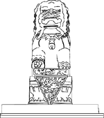

Mervyn's Celebrates Family Days With a Roar!
|  |
Look for Me in the Sunday, January 3rd Paper. Enter the Mervyn's California Amazing Animals Coloring Contest . Win a Weekend in New York City for a Family of Four & See "The Lion King" on Broadway! |
What's the Amazing Animals Coloring Contest?
Amazing Animals is a coloring contest and an art hunt. After you color your sheet using crayons or markers, visit The Minneapolis Institute of Arts to find the artwork on the sheet and answer questions them.
Who can enter?
The contest is open to all kids from kindergarten through grade six.
Where can I get my coloring sheet?
Beginning January 3, 1999, you can get started by picking up your Amazing Animals coloring sheet at The Minneapolis Institute of Arts information desk. Also watch for the coloring sheets to appear in the Sunday, January 3, 1999 editions of the Star Tribune and St. Paul Pioneer Press or pick up a sheet during free, drop-in art activities at the following Mervyn's California stores:
Thursday, January 14, 1999, 3 - 5 p.m. - Midway store
Friday, January 15, 1999, 3 - 5 p.m. - Northtown store
Saturday, January 16, 1999 2 - 4 p.m. - Rosedale store
Sunday, January 17, 1999 2 -4 p.m. - Burnsville store
After I creatively color my sheet, what do I do next?
Come to The Minneapolis Institute of Arts to find the works of art on your coloring sheet in our permanent collection and answer questions about them. Go to the information desk and say you are on an Amazing Animals hunt for Mervyn's California and you will receive a brochure to help you find the animals. When you've completed your search, drop off your sheet in the Amazing Animals entry box back at the information desk.
When do I find out if I've won?
Entries with correct answers will be entered into the prize drawing to be held at 4 p.m., Sunday, January 24, 1999 during Mervyn's "As Good as Gold" Family Day. You don't need to be present to win, but you won't want to miss any of the performances, art activities or treasure hunts that are part of Family Day!
Have more questions?
Please call 612-870-3131 for answers!
| Sponsored by |